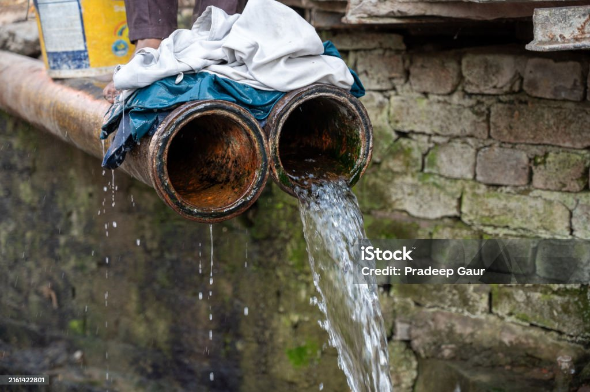
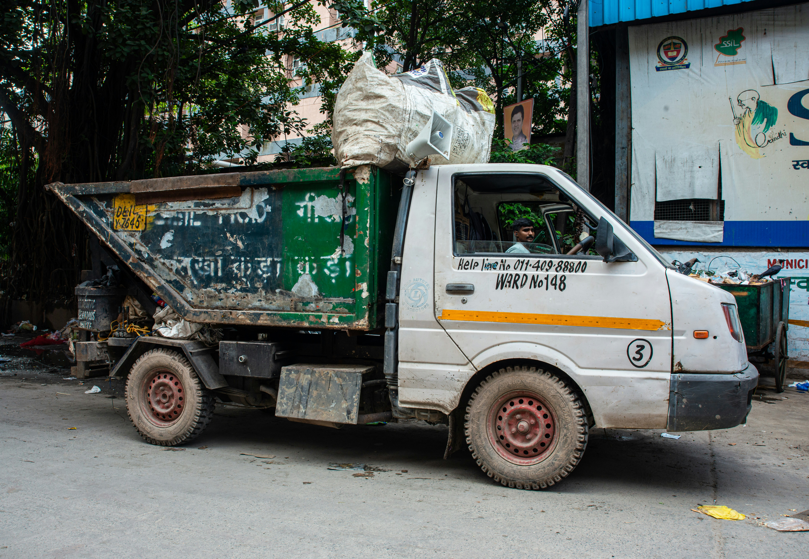
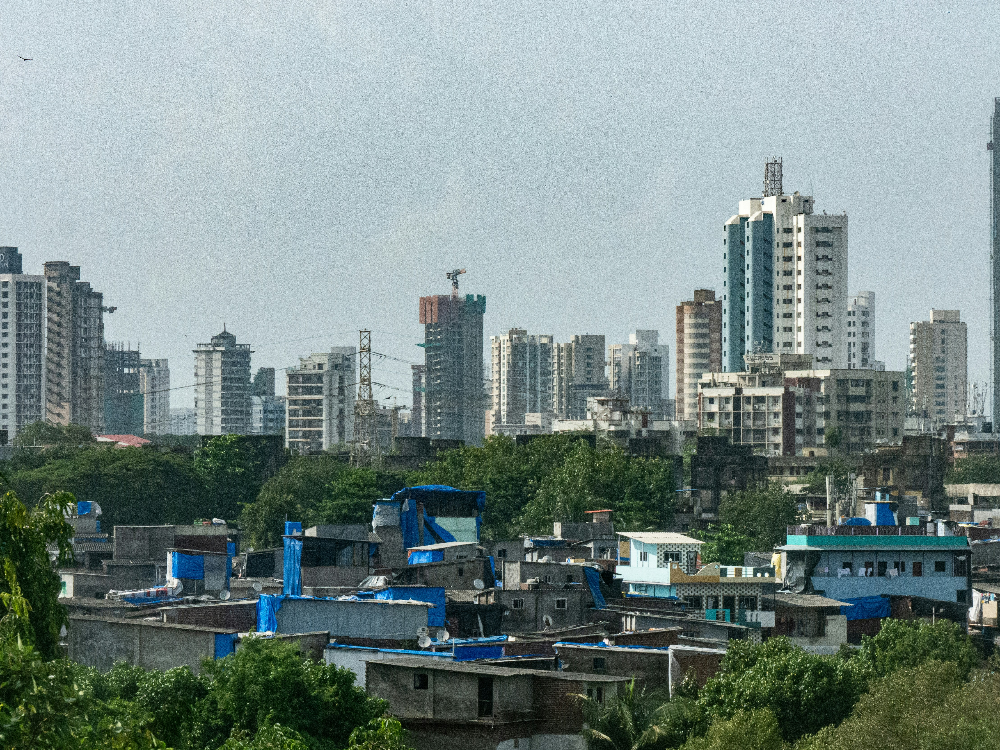
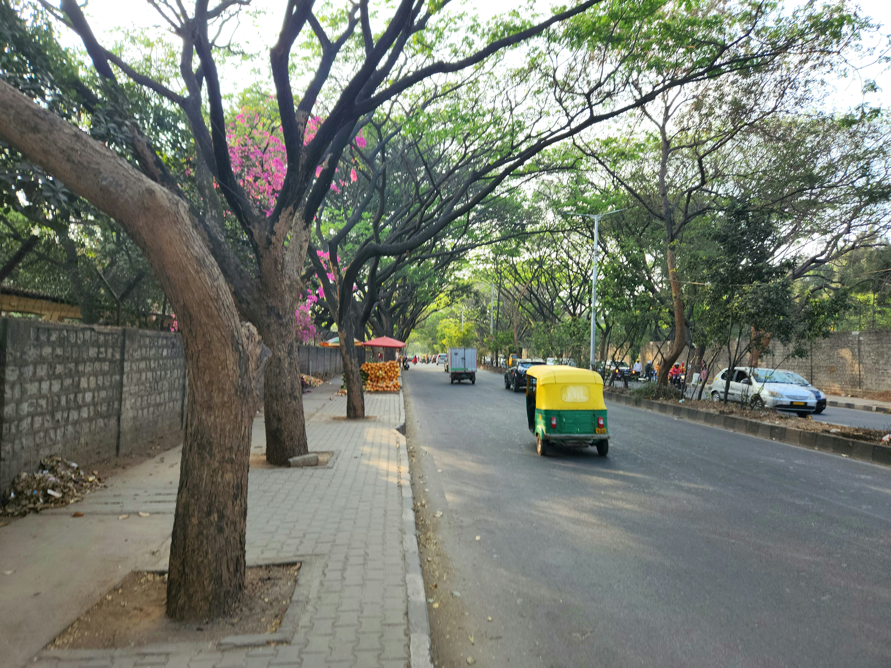

Government Initiative
This portal encourages citizens to report public infrastructure problems directly. Complaints are forwarded to the respective departments for faster maintenance and better public services.
Help your city by reporting damaged roads, street lights, water leakage, garbage issues and more.
Report NowThe Public Infrastructure Damage Reporting System enables citizens to report damaged roads, broken street lights, water leakage, garbage collection issues and bridge damage. The complaints are forwarded to the concerned government authority for timely action, helping improve public infrastructure and city services.

This portal encourages citizens to report public infrastructure problems directly. Complaints are forwarded to the respective departments for faster maintenance and better public services.
Report potholes and damaged roads for quick repair.

Report leaking pipelines and water wastage.

Report garbage collection issues in your locality.
Report damaged bridges and unsafe flyovers.

Support smart city infrastructure by reporting issues.

Submit complaints online with photos and location details.
Total Complaints
Pending Complaints
In Progress
Resolved Complaints